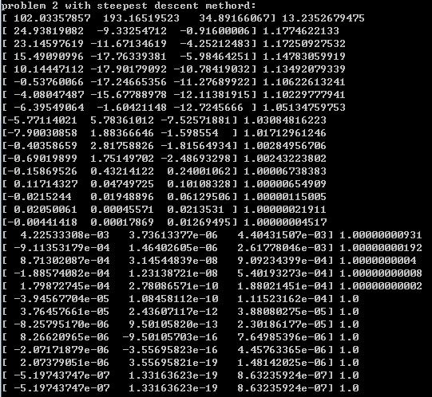
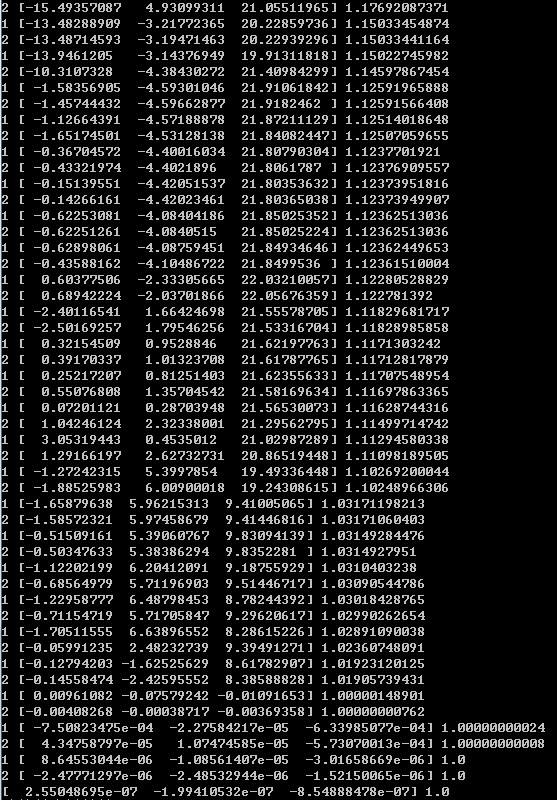

题目描述
(1). 使用最速下降法求解以下两个函数的极小值。
$$ F_1=\sum_{i=1}^n(x_i^2-10\cos (2\pi x_i)+10) \quad x_i \in [-5,5],i=1,2,3 $$
$$ F_2=\frac {1}{4000} \sum_{i=1}^n {x_i^2}-\prod_{i=1}^n \cos (\frac {x_i}{\sqrt i})+1 \quad x_i \in [0,600],i=1,2,3 $$
(2). 使用DFP算法求解(1)中的两个函数的极小值。
程序实现
对这两个题目，算法是给定的，所需要的只是手工求出其梯度向量函数，并且用代码将函数本身和梯度函数实现。 之后随时可以调用这两个函数计算某一点的函数值和梯度向量值。最后按照最速下降法和DFP算法的框图实现这两个 求解最小值的函数。实现过程中的一个需要注意的地方是求函数值时如入为一个向量，输出为一个数值，而梯度则输入和 输出都是向量。
本程序考虑到便捷性和我个人对语言的熟练程度，我选择了python语言，该语言方便快捷，是一种优秀的通用编程语言。 同时，python具有两个优秀的科学计算库：numpy和scipy，这两个库完全可以替代Matlab，完成科学计算。本作业即采用 了numpy库进行矩阵和向量计算。由于这两个库都是由C语言完成的，所以运算速度非常快。
具体的程序可以参考最后一部分的程序清单。主要包括以下几个部分：
- eps：定义的一个全局变量，控制搜索的精度
- F1(x)：计算原问题中的第一个函数在x点的函数值
- F2(x)：计算原问题中的第二个函数在x点的函数值
- gF1(x): 计算原问题中的第一个函数在x点的梯度向量
- gF2(x): 计算原问题中的第二个函数在x点的梯度向量
- fb_search(fx,g,x,alpha)：进退法线性搜索函数，从x点开始求得使函数fx(x+a*g)值最小的参数 a,g为函数fx在x的的梯度 alpha为起始点，默认初始步长为 1, eps=1e-6
- fanshu(x)：计算向量x的范数
- sdm(f,g,x)：sdm法计算函数f的最小值，f原函数，g为f的梯度计算函数，x为搜索起始点
- dfp(f,g,x,n)：dfp法计算函数f的最小值，f原函数，g为f的梯度计算函数，x为搜索起始点
结果展示
下面是程序的运算结果：


结果分析
(1). 从程序的运行结果来看，两种算法都基本实现了要求，都能顺利计算出函数的最小值。相对而言，最速下降法算法的迭代 步数要少的多，很快就到达了最小值点。
(2). 在实现的过程中，计算最小值时需要线性搜索一个参数lambda使得f(x+lambda*g)最小，该参数的确定我使用了成功 失败法，但该方法的起始搜索点选择，即lambda的初始值的算则，对程序的运行结果影响很大，选的过小的话往往会使得计算结果在初始点附近陷入 无穷搜索状态，且不收敛。后来发现选择一个较大的值作为初始搜索点是比较好的，能很快达到搜索点，至于原因，还没想明白。
(3). 在实现的过程中未考虑数据的范围，测试时只考虑其实搜索点的选择范围，在题目给定的范围之内，算法都能很快到达函数的 最小值点，结果比较好。
(4). 有待进一步改进程序，使得在一位搜索时，解决因为步长过大导致搜索区间超出给定的可行域的问题。
课程总结
数值算法在实际应用中因为很少用到，所以在程序实现时一时还不太习惯，不过通过这次实验，我也发现数学方法不仅仅是局限在 理论上的方法，在具体应用中也是有很大的应用价值的。
优化方法的应用应当是很广泛的，之前我在参加腾讯的一个竞赛时，所做的一个参赛作品中用到了遗传算法来对我生成的一些结果 进行优化筛选。这个过程和本课程的结合度比较紧密，优化的过程也是一个迭代的过程，现在想想，当时的优化过程也可以抽象为 一个求函数最大值的过程，不过函数的可行域是离散的点。我简单粗暴的的采用了遍历所有可能的方法，在当时的条件下，因为要 搜索的点不多，所以是可行的，但如果能结合本课程的优化方法，应当可以减少很多运算量。这一想法我会留到考试后再去实践。
工程优化这门课的工程性应该是很强的，希望以后的课本中能引入更多的可实践性强的课题。
程序清单
from __future__ import division from numpy import * eps=1e-6 # 计算函数F1在x点的值 def F1(x): #x*x-10*cos(2*pi*x)+10 i=0 sum=0 while i<x.size: sum += (x[i]*x[i]-10*cos(2*pi*x[i])+10) i=i+1 return sum #计算函数F2在x点的值 def F2(x): sum1=0 i=0 while i<x.size: sum1 += (x[i]*x[i]) i+=1 sum1/=4000 sum2=0 i=0 while i<x.size: sum2*=cos(x[i]/sqrt(i+1)) i+=1 return sum1-sum2+1 #计算F1在x点的梯度向量的值 def gF1(x): return 2*x+20*pi*sin(x) #计算F2在x点的梯度值 def gF2(x): res=array([0.0,0,0]) res=x/2000 res[0]+=sin(x[0])*cos(x[1]/sqrt(2))*cos(x[2]/sqrt(3)) res[1]+=sin(x[1]/sqrt(2))*cos(x[0])*cos(x[2]/sqrt(3))/sqrt(2) res[2]+=sin(x[2]/sqrt(3))*cos(x[0])*cos(x[1]/sqrt(2))/sqrt(3) return res #最速下降法的线性搜索：进退法线性搜索，从x点开始求得使函数fx(x+a*g)值最小的参数 a,g为函数fx在x的的梯度 #alpha为起始点，默认初始步长为 1, eps=1e-6 def fb_search(fx,g,x,alpha): global eps step=1 fai1=fx(x+alpha*g) #开始搜索 while(1): fai2=fx(x+(alpha+step)*g) if fai2<fai1: alpha=alpha+step fai1=fai2 step=step+step else: if abs(step)<=eps: return alpha else: step=-step/4 #求向量的范数 def fanshu(x): x=x*x sum=0 i=0 while i<x.size: sum+=x[i] i+=1 return sqrt(sum) #最速下降法(steepest descent methord)求解函数极小值 def sdm(f,g,x): global eps while(1): s=-g(x) if fanshu(s)<=eps: print x,F1(x) return x else: alpha=fb_search(f,s,x,1) x=x+alpha*s print x,F1(x) #DFP法求解函数最小值 def dfp(f,g,x,n): global eps x1=x x2=0 g1=g(x) g2=0 if fanshu(g1)<=eps: print x1,f(x1) return x1 else: while(1): k=1 H1=eye(n) while(1): z1=-dot(H1,g1.reshape(n,1)) z1.shape=(1,n) #线性搜索 alpha=fb_search(f,z1[0],x1,1) x2=x1+alpha*z1[0] g2=g(x2) if fanshu(g2)<=eps: print x2,f(x2) return x2 else: if(k==n): x1=x2 g1=g2 break delta_x=x2-x1 delta_g=g2-g1 garma=dot(H1,delta_g.reshape(n,1)) #更新x1,g1 x1=x2 g1=g2 #更新H H1=H1+dot(delta_x.reshape(n,1),delta_x.reshape(1,n))/dot(delta_x.reshape(1,n),delta_g.reshape(n,1))-dot(garma,garma.reshape(1,n))/dot(dot(delta_g.reshape(1,n),H1),delta_g.reshape(n,1)) print k,x1,f(x1) k+=1 #主函数 if __name__ == '__main__': #import pdb #pdb.set_trace() print "problem 1 with steepest descent methord:" sdm(F1,gF1,array([5,-4,1])) print print "problem 2 with steepest descent methord:" sdm(F2,gF2,array([100,200,3])) print print "problem 1 with dfp methord:" dfp(F1,gF1,array([1,2,-3]),3) print print "problem 2 with dfp methord:" dfp(F2,gF2,array([100,200,3]),3)